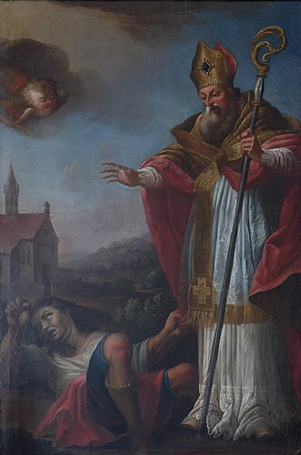

The History of Valentines Day

The history of Valentines is rather old. It's believed to have started in the 3rd century under a martyr named Saint Valentine of Rome.
He would minister weddings for Chirstians at a time when the religion was illegal in the Roman Empire. He would eventually be found and executed for his "crimes".
It wasn't until the turn of the 8th century that the celebration "Feast of Saint Valentine" would become popular. This celebration would occur on February 14th which started the tradition of Valentines being on the 14th of February.
Although, the Orthodox Church recognizes Valentines on July 6th and July 30th to honor Saint Valentine and Hieromartyr Valentine.
It wouldn't be until the turn of the 14th and 15th century that Valentines became associated with romantic love. Most likely as a result of the emerging Renaissance period.
By the 18th and 19th century, Valentines became more assoicated to the modern day holiday which included couples presenting flowers, offering candy like chocolate, and sending greeting cards which were known as "Valentines".
The holiday continued to evolve as iconic symbols like hearts, doves, and cupid became the face of the holiday.
If you want to learn more, you can click on the video below
Citations
- Wikipedia contributors. "Valentine's Day." Wikipedia, The Free Encyclopedia. Wikipedia, The Free Encyclopedia, 10 Feb. 2025. Web. 10 Feb. 2025.
- The 700 Club. "The History Behind St. Valentine." Youtube, uploaded by The 700 Club, 15th Feb 2019, https://youtu.be/Gc5rqnMqMxQ?si=rcqZdu9sc8goIDyr